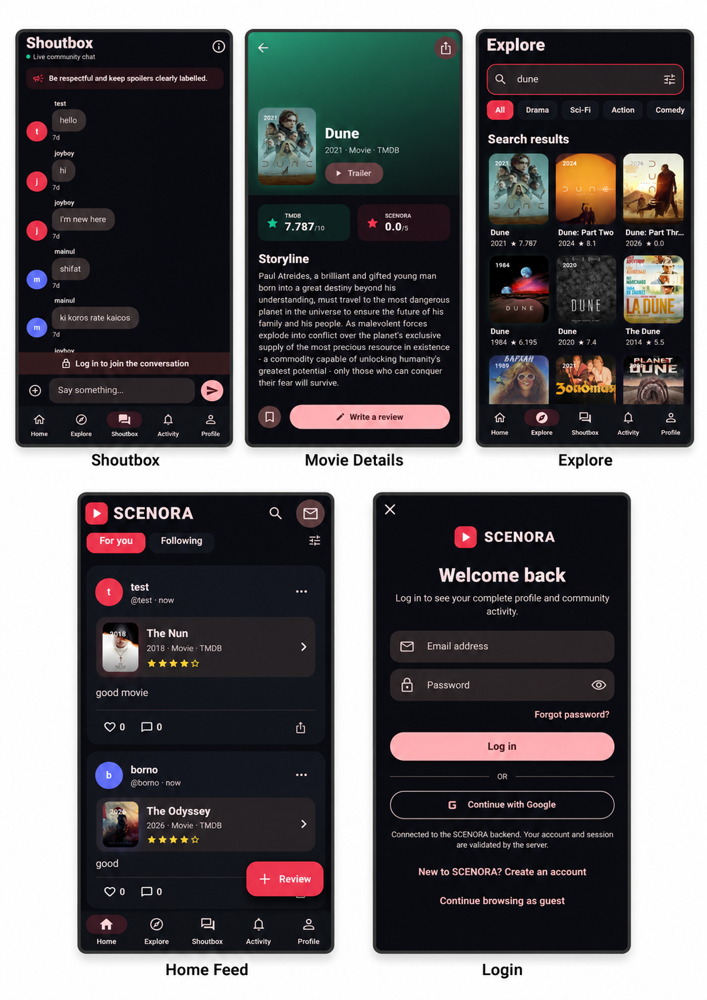
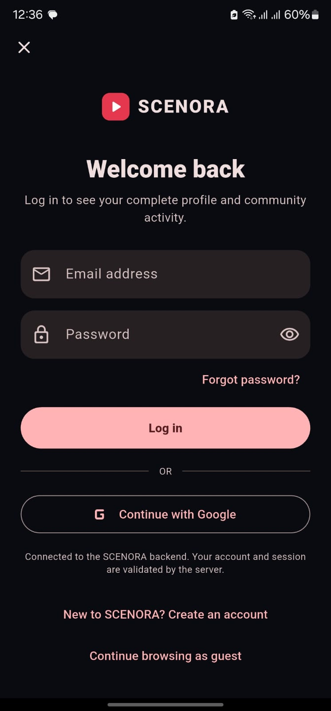
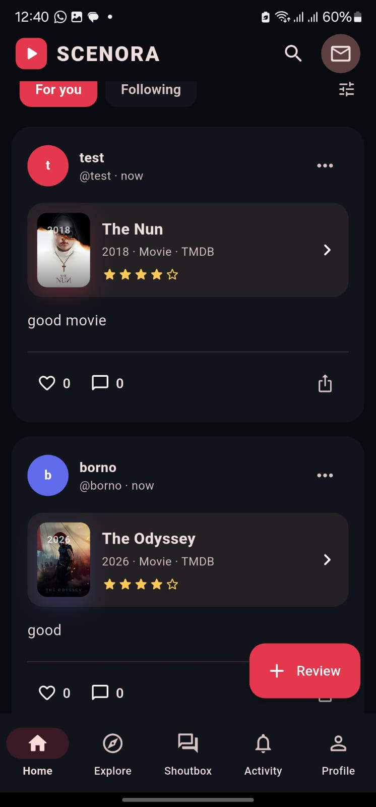
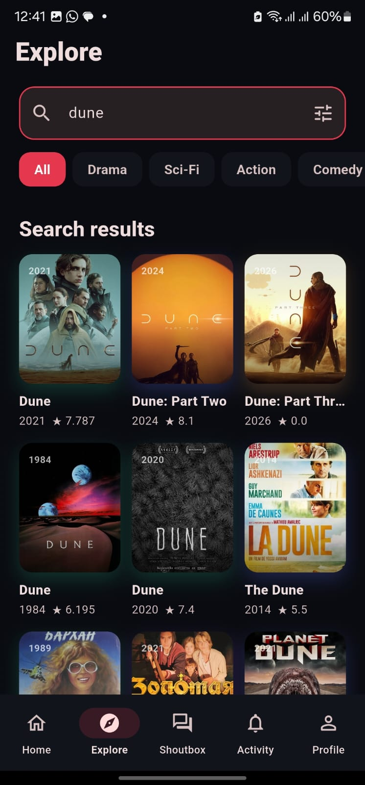
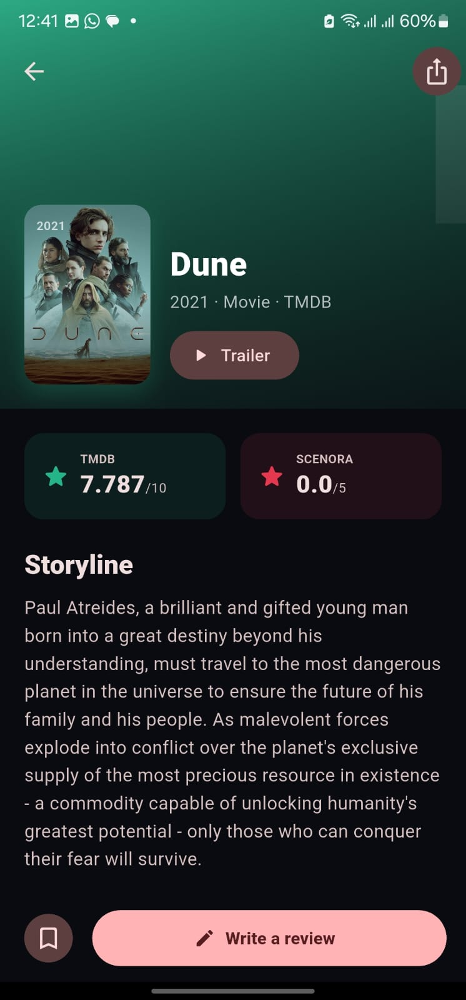
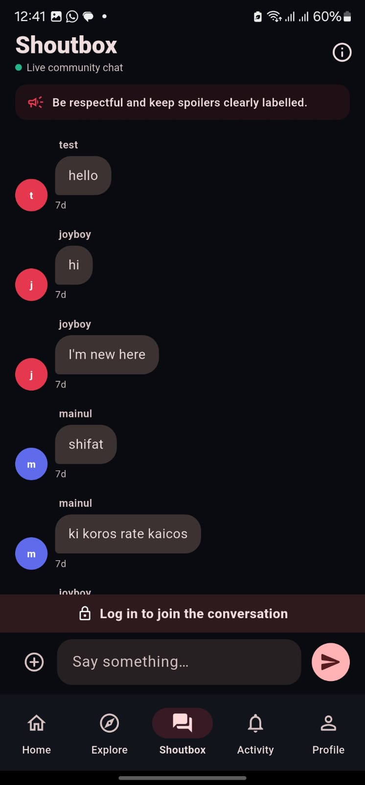

Submitted by
| 23524202047 | Mainul |
| 23524202051 | Rony |
| 23524202095 | Emon |
| 23524202129 | Shifat |
SCENORA is a Flutter-based Android application designed to bring movie discovery, personal reviewing, and social discussion into one accessible platform. Movie enthusiasts commonly use separate services to find film information, record opinions, communicate with friends, and follow community reactions. SCENORA addresses this fragmented experience through a single application where a user can create an account, search real movie data, view posters and details, publish star-rated reviews, maintain a watchlist, like and comment on reviews, receive activity updates, and participate in a shared community Shoutbox.
The client application is developed with Flutter and Dart using a reusable screen–model–widget structure. A custom Dart REST backend, built with Shelf and Shelf Router, provides authentication, profile, movie, review, interaction, watchlist, activity, and chat services. Development data is persisted atomically in JSON, while The Movie Database (TMDB) API supplies live movie metadata. Passwords are protected with a salted PBKDF2-style HMAC-SHA-256 derivation, access and refresh tokens are used for sessions, and mobile tokens are held in secure storage. A Cloudflare Quick Tunnel enables an Android phone on another network to reach the local demonstration server through HTTPS.
The resulting MVP runs as an installable Android application and demonstrates end-to-end mobile development, API integration, persistent multi-user data, security controls, and cross-device interaction. Automated backend tests cover the principal workflow, while widget and manual tests verify the mobile interface. The project establishes a practical foundation for future production deployment with a managed database, stable cloud hosting, WebSocket chat, push notifications, moderation, and media storage.
Keywords: Flutter, Android, Dart, REST API, Shelf, TMDB, social reviewing, Cloudflare Tunnel.
| Abstract | 2 |
| Table of Contents | 3 |
| 1. Introduction | 4 |
| 1.1 Project Overview | 4 |
| 1.2 Problem Statement | 4 |
| 1.3 Objectives / Goals | 4 |
| 1.4 Scope of the Project | 4 |
| 1.5 Target Users | 5 |
| 1.6 Limitations | 5 |
| 2. Literature Review / Related Work | 6 |
| 2.1 Distinguishing Characteristics | 6 |
| 2.2 Technical References | 6 |
| 3. Requirement Analysis | 7 |
| 3.1 Functional Requirements | 7 |
| 3.2 Non-Functional Requirements | 8 |
| 3.3 Hardware Requirements | 8 |
| 3.4 Software Requirements | 9 |
| 4. System Design | 10 |
| 4.1 Architecture Diagram | 10 |
| 4.2 Use Case Diagram | 11 |
| 4.3 Activity Diagram / Flowchart | 12 |
| 4.4 Database Design | 12 |
| 4.5 UI Design | 13 |
| 5. Implementation / Development | 15 |
| 5.1 Tools & Technologies | 15 |
| 5.2 Module Description | 15 |
| 5.3 Key Code Snippets | 16 |
| 5.4 Screenshots | 17 |
| 6. Testing | 22 |
| 6.1 Testing Strategy | 22 |
| 6.2 Bugs Found & Fixes | 23 |
| 7. Results and Discussion | 24 |
| 7.1 Final Working Output | 24 |
| 7.2 Performance Observations | 24 |
| 7.3 What Went Well | 24 |
| 7.4 Challenges and Trade-offs | 24 |
| 7.5 User Feedback | 25 |
| 8. Conclusion and Future Work | 26 |
| 8.1 Conclusion | 26 |
| 8.2 Future Enhancements | 26 |
| References | 27 |
| Appendix A — Main REST Endpoints | 28 |
SCENORA is a social movie and series review application developed primarily for Android. It connects content discovery with user-generated reviews and community interaction. Guests may browse community reviews, movie information, comments, and Shoutbox messages. Registered members gain access to protected actions such as publishing a review, liking and commenting, maintaining a watchlist, updating a profile, and sending community messages.
The system has two principal components. The Flutter mobile client renders the user interface and communicates through an API client. The independent Dart backend validates requests, authenticates users, applies business rules, calls TMDB, and persists application data. This separation makes the mobile interface easier to maintain and ensures secrets such as TMDB credentials remain on the server.
Movie viewers often move between a discovery website, a note-taking or diary application, a social network, and a messaging service to complete one simple cycle: find a film, watch it, record an opinion, and discuss it. General social networks do not structure posts around movie metadata, while large movie databases may feel complex to a casual user. There is therefore a need for a focused, easy-to-use mobile experience that combines reliable movie information with human reviews and lightweight community interaction.
A second development problem is demonstrating a real client–server application from a classroom network. A backend hosted on a student laptop normally has a local IP address that changes across Wi-Fi and mobile hotspots. SCENORA solves the demonstration issue by allowing the backend address to be edited in the application and by supporting a temporary Cloudflare HTTPS tunnel.
The implemented scope covers an Android Flutter client, a Dart REST backend, JSON persistence, TMDB integration, and temporary public connectivity. The client includes Home, Explore, Movie Detail, Review Composer, Shoutbox, Activity, Login/Register, and Profile interfaces. The API includes authentication, profiles, follows, movies, watchlists, reviews, likes, comments, activity, and messages.
The project is an academic MVP rather than a public commercial service. Its purpose is to demonstrate software design, working features, secure data flow, testing, and realistic integration decisions.
SCENORA was informed by three categories of software: movie databases, review diaries, and social discussion services. IMDb and TMDB demonstrate structured movie search, cast and metadata presentation. Letterboxd demonstrates the value of a personal movie diary and social reviews. General group-chat products demonstrate immediate, low-friction community discussion. SCENORA selects the most relevant concepts for a focused academic application without attempting to reproduce the scale of those platforms.
| System / Category | Relevant Capability | SCENORA Interpretation |
|---|---|---|
| IMDb | Large catalogue, search, ratings, and title information. | SCENORA provides a smaller mobile-first discovery flow and connects title data directly to community reviews. |
| TMDB | Developer API for movie metadata and images. | The backend proxies TMDB requests, caches selected data, and prevents API credentials from being embedded in the APK. |
| Letterboxd | Movie diary, ratings, reviews, lists, and social interaction. | SCENORA uses a concise review feed, watchlist, likes, comments, and activity flow suitable for the course scope. |
| Community chat | Rapid discussion among multiple users. | The shared Shoutbox provides a simple group conversation connected to the same authenticated community. |
.env file and are never requested from the mobile user.Flutter and Material Design guidance informed the interface and navigation. Dart and Shelf documentation informed the API implementation. TMDB developer documentation informed movie endpoints and image paths. OWASP guidance influenced password storage and token handling, and Cloudflare documentation informed the temporary HTTPS tunnel used for demonstration. Full links are listed in the References section.
| ID | Requirement | Actor | Status |
|---|---|---|---|
| FR-01 | Register a unique account using username, email, and password. | Guest | Implemented |
| FR-02 | Log in, restore a valid session, refresh tokens, and log out. | Member | Implemented |
| FR-03 | Search movies and view title, poster, year, genre, rating, and overview. | Guest | Implemented |
| FR-04 | Create a review with rating, text, and spoiler flag. | Member | Implemented |
| FR-05 | View community reviews and their interaction counts. | Guest | Implemented |
| FR-06 | Like/unlike and comment on a review after authentication. | Member | Implemented |
| FR-07 | Add or remove a movie from a personal watchlist. | Member | Implemented |
| FR-08 | View and edit display name, biography, and location. | Member | Implemented |
| FR-09 | Receive activity entries for likes, comments, and follows from others. | Member | Implemented |
| FR-10 | Read Shoutbox messages publicly and send messages when logged in. | Guest / Member | Implemented |
| FR-11 | Change and validate the backend server URL without rebuilding the APK. | User | Implemented |
| FR-12 | Switch between light and dark appearance. | User | Implemented |
| Category | Requirement and Implementation |
|---|---|
| Usability | Bottom navigation exposes the five main destinations; labels, validation messages, empty states, and consistent Material components reduce learning effort. |
| Performance | Small JSON payloads, server compression, limited result sets, debounced search, and periodic background refresh keep the MVP responsive. |
| Security | Protected routes require bearer tokens; passwords use salt and iterative HMAC-SHA-256 derivation; raw tokens are not persisted by the server; mobile tokens use secure storage. |
| Reliability | Atomic JSON saves use a temporary file before replacement; health checks validate connectivity; cached movie data provides a fallback. |
| Maintainability | Client screens, models, widgets, theme, and API client are separated; server API, security, storage, and startup concerns are separated. |
| Compatibility | The Android client targets the Flutter-configured SDK range and was tested on a modern Samsung Android phone. |
| Privacy | Public API representations exclude password hashes and salts. The report and client never expose TMDB credentials or token pepper values. |
| Offline behavior | Full social functionality requires a server connection. The backend can serve seeded movie data if TMDB is unavailable, but the mobile app is not designed as fully offline software. |
| Component | Minimum / Recommended Requirement |
|---|---|
| Development computer | 64-bit Windows 10/11, dual-core CPU or better, 8 GB RAM recommended, and sufficient storage for Flutter SDK and Android build tools. |
| Android test device | Flutter-supported Android version, approximately 100 MB free storage, internet connectivity; Samsung Galaxy S23 Ultra was used for practical installation testing. |
| Network | Wi-Fi or mobile data for TMDB and tunnel access. The phone and computer do not need the same LAN when Cloudflare Tunnel is active. |
| Software | Purpose |
|---|---|
| Flutter SDK and Dart 3 | Mobile application and backend language/runtime. |
| Visual Studio Code | Source editing, terminal, debugging, and project management. |
| Android SDK / Gradle / Java 17 | Compiling and packaging the Android APK. |
| Material Design / Cupertino Icons | Consistent interface components and icons. |
| shared_preferences 2.5.3 | Persistent local application settings, including selected backend address and theme preference. |
| flutter_secure_storage 9.2.4 | Protected storage of access and refresh tokens on the device. |
| Shelf 1.4.2 and Shelf Router 1.1.4 | REST server pipeline and route handling. |
| crypto 3.0.6 | Password derivation and token hashing primitives. |
| TMDB REST API | Live movie discovery, metadata, and poster paths. |
| Cloudflared | Temporary public HTTPS access to the local classroom server. |
The system uses a layered client–server architecture. The Flutter presentation layer calls a centralized API client. Requests travel over HTTP locally or HTTPS through the demonstration tunnel. Shelf routes each request to application logic, which accesses security, TMDB, and JSON persistence services.
The development database is a JSON document containing table-like arrays. Identifiers use a prefix, timestamp component, and secure random component. Atomic saving first writes a temporary file and then replaces the primary database file. The logical relationships are shown below.
The interface follows a mobile-first Material style with a crimson brand color, rounded cards, readable typography, light/dark themes, and a five-destination bottom navigation bar. The following wireframes represent the implemented information architecture.
The Android frontend is implemented with Flutter and Dart. Flutter provides a single reactive widget tree, Material components, asynchronous networking, and Android release packaging. The backend is a separate Dart package using Shelf, Shelf Router, and the crypto library. This choice lets both client and server share a language while remaining independently deployable.
The local backend listens on all IPv4 interfaces at port 8080. Configuration is read from process variables or server/.env; process variables take precedence. The variables include the port, TMDB API credentials, and a token pepper. Data is stored at server/data/db.json. Cloudflared optionally maps http://127.0.0.1:8080 to a temporary HTTPS URL.
Flutter 3 / Dart 3Material DesignShelfShelf RouterJSON REST APITMDBSecure StorageCloudflare Tunnel
| Module | Main Files / Responsibility |
|---|---|
| Application shell | main.dart, main_shell.dart: theme initialization, destination navigation, global state, background synchronization, and screen coordination. |
| Authentication | login_screen.dart, API client, and backend auth routes: registration, login, refresh, logout, conditional access, and restored identity. |
| Movie discovery | explore_screen.dart, movie_detail_screen.dart, and movie routes: debounced search, popular titles, details, images, and watchlist actions. |
| Reviews | review_composer.dart, home_screen.dart, and review routes: validation, creation, feed, ratings, spoiler state, likes, and comments. |
| Community | shoutbox_screen.dart and message routes: shared messages, authenticated sending, and four-second polling. |
| Activity | notifications_screen.dart and activity route: incoming likes, comments, and follow events ordered by creation time. |
| Profile | profile_screen.dart and user routes: public/private profile fields, counts, editing, theme, logout, watchlist, and backend URL settings. |
| Security | security.dart: random salts/tokens, iterative HMAC-SHA-256 password derivation, constant-time comparison, and peppered token hashes. |
| Persistence | store.dart: schema initialization/migration, ID generation, typed tables, and atomic JSON save. |
The UI checks authentication before opening the composer, then sends validated review data through the centralized API client.
The server stores a derived password value and random salt, never the original password. Token hashes are also stored instead of raw bearer tokens.
Writing to a temporary file before renaming reduces the risk of leaving a partially written database after interruption.
The generated URL is entered in Profile → Settings → Backend server → Test & Save. It is intentionally not hard-coded because every Quick Tunnel session receives a different address.
The following captures were taken from the installed SCENORA Android application. They demonstrate authenticated access, server-backed reviews, TMDB search and movie details, and a multi-account community Shoutbox. Android status and gesture bars were visually cropped in the detailed figures to keep attention on the application interface.






Testing combined automated backend integration tests, Flutter widget tests, manual Android tests, and network-path tests. The backend test launches a real local HTTP server with a temporary JSON database and sends requests through the same routes used by the mobile client. This approach verifies serialization, authentication, business rules, persistence interactions, and status codes together.
Flutter widget tests verify that the navigation shell appears, Explore opens, and a guest is redirected to authentication before publishing a review. Manual testing on an Android phone verifies installation, touch interaction, poster display, profile identity, cross-account activity, and Cloudflare connectivity.
| Test ID | Scenario | Expected Result | Result |
|---|---|---|---|
| TC-01 | GET /health | HTTP 200 and service status ok. | Pass |
| TC-02 | Register two unique users | Accounts and access/refresh tokens are returned. | Pass |
| TC-03 | Login and refresh session | Valid credentials work; refresh rotates the session. | Pass |
| TC-04 | Edit authenticated profile | Bio/location persist and appear in the current profile. | Pass |
| TC-05 | Search “Dune” | TMDB or cached movie results are returned. | Pass |
| TC-06 | Toggle watchlist item | The movie appears in the authenticated user's watchlist. | Pass |
| TC-07 | Publish a review | Review is stored and appears in the feed. | Pass |
| TC-08 | Like without login | Server rejects the request with HTTP 401. | Pass |
| TC-09 | Second user likes/comments | Counts update and the first user's Activity receives both events. | Pass |
| TC-10 | Follow another user | Follow state/count changes and Activity receives a follow event. | Pass |
| TC-11 | Send and list Shoutbox messages | Message persists and is visible to subsequent clients. | Pass |
| TC-12 | Open protected review composer as guest | Login screen opens with a clear reason. | Pass |
| TC-13 | Save Cloudflare URL in app | Health check passes and the phone communicates across networks. | Pass |
| TC-14 | Install release APK on Samsung S23 Ultra | Application installs, launches, and reaches the backend. | Pass |
| Problem | Cause | Resolution |
|---|---|---|
| Android phone was not detected. | No connected ADB device or configured emulator. | Built a release APK and transferred it directly to the physical phone for installation. |
| Initial APK was reported incompatible. | Incorrect/old output selection or build compatibility issue. | Generated and used the universal release APK from build/app/outputs/flutter-apk/app-release.apk. |
| New login still displayed a default profile. | Profile interface used seeded/mock identity instead of authenticated API data. | Bound profile rendering to the current backend user and removed default activity data. |
| New comments/reviews were not visible. | Client state was not refreshed from persistent backend data. | Connected create/list endpoints and refreshed feed, comments, profile, and counters after writes. |
| Movie posters did not display. | Poster path was not consistently converted into a full TMDB image URL. | Normalized poster data in the API client/widget and used cached movie metadata. |
| Backend stopped working after changing Wi-Fi/hotspot. | The laptop's local IP address changed. | Added editable backend settings and a Cloudflare Quick Tunnel launcher. |
| Tunnel script stopped on normal Cloudflared logs. | Windows PowerShell interpreted native stderr status messages as errors. | Handled native output safely, detected the generated URL, displayed it clearly, and copied it to the clipboard. |
| Home search/message icons did nothing. | The icon callbacks were empty placeholders. | Connected Search to Explore and Messages to the Shoutbox destination. |
The project produced a functioning Flutter Android application and a self-contained Dart backend. A fresh user can register, obtain an account-specific profile, search for a real movie, publish a review, and retain the result after refresh or restart. A second account can interact with that review through likes and comments; these actions appear as Activity items for the review owner. Both accounts can participate in the persistent Shoutbox. The backend URL can be changed from the app and validated before saving, making the same APK usable across different demonstration networks.
The greatest practical challenge was connecting a physical Android phone to a laptop-hosted server under changing network conditions. A temporary tunnel was selected because it is fast to demonstrate and requires no permanent hosting account; however, it has no uptime guarantee and changes its address on restart. A JSON database was selected for simplicity and portability, but it does not provide transactions, indexing, or concurrency at production scale. Polling simplified Shoutbox implementation but trades efficiency for ease of deployment.
Formal user-study data was not collected, so the report does not claim quantitative satisfaction results. Informal team testing indicated that the five-tab navigation, visible authentication prompts, and movie-first review flow were easy to understand. Future evaluation should use a structured questionnaire with task completion time, error counts, and a standard usability scale.
SCENORA achieved the central objectives of Software Development Project II by delivering a working Android client, custom REST backend, external movie integration, persistent multi-user data, authentication, and social interaction. The system supports a complete demonstration: server startup, secure account creation, movie search, review publication, cross-account likes and comments, Activity updates, watchlist use, and community messaging.
The project also demonstrates engineering decisions beyond visual interface design. Secrets remain on the backend, password and session values receive protection, JSON saves are atomic, API behavior is tested through a real HTTP server, and the installed APK can adapt to a new server address. The result is a credible academic MVP with a clear path to production improvement.
| Area | Method and Route | Purpose |
|---|---|---|
| System | GET /health | Connectivity and service health check. |
| Authentication | POST /auth/register, /auth/login, /auth/refresh, /auth/logout | Create and manage sessions. |
| Users | GET/PATCH /users/me; GET /users/<id> | Private and public profiles. |
| Follows | POST /users/<id>/follow; GET followers/following | Toggle and list social relationships. |
| Movies | GET /movies/search, /movies/popular, /movies/<id> | TMDB discovery and detail data. |
| Watchlist | GET /watchlist; POST /watchlist/<movieId> | List and toggle saved movies. |
| Reviews | GET/POST /reviews; GET/PATCH/DELETE /reviews/<id> | Review lifecycle. |
| Likes | POST /reviews/<id>/like | Authenticated like/unlike toggle. |
| Comments | GET/POST review comments; PATCH/DELETE comment | Comment lifecycle. |
| Activity | GET /activity | Incoming like, comment, and follow events. |
| Shoutbox | GET/POST /messages | Read and send shared community messages. |
D:\Flutter\Scenora..\start_demo_tunnel.bat and keep the terminal open.https://…trycloudflare.com URL..env file, TMDB credentials, access tokens, passwords, or other secrets.